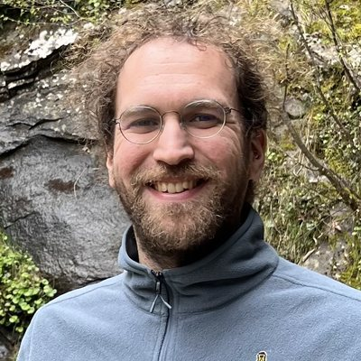

Panagiotis Koromilas
Postdoctoral ResearcherUniversity of Athens and The Cyprus Institute
I am a postdoctoral researcher at the National and Kapodistrian University of Athens (NKUA), where I work with Yannis Panagakis, and at The Cyprus Institute, where I work with Mihalis Nicolaou. From 2021 to 2026 I worked at NCSR “Demokritos” with Theodoros Giannakopoulos. I received my Ph.D. in Computer Science from NKUA in June 2026 under the supervision of Yannis Panagakis, supported by a competitive national Ph.D. Fellowship (14% acceptance rate). I also hold an integrated M.Eng. in Electrical and Computer Engineering from the National Technical University of Athens, where my diploma thesis, supervised by Dimitris Fotakis, earned an honourable mention for the best 2023 paper in Environmental and Resource Economics.
My research focuses on representation learning across self-supervised, multimodal, and supervised settings as well as interpretability. I develop theoretically grounded methods that induce efficiency, robustness, and generalization and that transfer across domains such as imagery, language, audio-visual data, cryo-EM, and Earth Observation. My work has been published in the most competitive machine learning venues, including three first-author papers at ICML and a spotlight paper at NeurIPS 2026 (top 1.2%). I received a Gold Reviewer Award at ICML 2026 and regularly review for NeurIPS, ICML, ICLR, and CVPR.
Research
Below you can see my research organized in three different ways, namely (i) by research area, (ii) by the questions it addresses and (iii) by data modality. Selecting a panel shows its papers, and a paper may appear in more than one category.
News
- Sep 2026fmxcoders accepted at NeurIPS 2026 as a Spotlight.
- Jun 2026Ph.D. defended at NKUA, Principled Contrastive Learning.
- May 2026Two first-author papers accepted at ICML 2026, Neural Collapse by Design and PolySAE.
- Apr 2026Gold Reviewer Award at ICML 2026.
Recognition
- 2026Spotlight at NeurIPS 2026 for fmxcoders (top 1.2% of submissions)
- 2026Gold Reviewer Award, ICML 2026
- 2026Outstanding Reviewer, Mechanistic Interpretability Workshop at ICML 2026
- 2024Honourable mention, EAERE Award for Outstanding Publication in Environmental and Resource Economics
- 2023HFRI Ph.D. Fellowship, 2023–2025 (14% acceptance rate)
Service
Reviewer for ICLR 2026–27, NeurIPS 2026, ICML 2026, CVPR 2026, IEEE TPAMI 2025, IEEE Transactions on Multimedia 2024, ICASSP 2024–25.